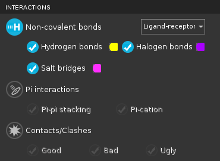

| Using | Features | Links |
The Interactions toolbox is used for displaying H-bond, halogen bond, salt bridge, contact, and pi interaction markers, and setting the colors for the markers.
To open this toolbox, move the pointer to the Interactions button on the Workspace Configuration toolbar, and click the … button that appears above it.

To display markers for a particular interaction, click the button for the interaction type and then select the option for the interaction.
To change the color of the markers for a particular interaction, click the color button next to the option for the interaction, and choose a new color.
To define the atom sets between which to display interactions, choose an item from the option menu for the interaction type.
To add properties to the project for the count of occurences of each interaction, click Create Property and select the interaction types in the dialog box that opens.
To set the paramaters that define each interaction type, open the Preferences panel and use the tools in the Non-bonded interactions section.
The toolbox has three sections, for the three different kinds of non-bonded interactions. Each section has the same layout and types of controls.
The display buttons and options control which interaction types are displayed in the Workspace. The button at the top of each section can be used to turn on and off all interaction markers of that type. The individual options can be used to control which specific interactions are shown.
The display options are also available in the Pose Viewer panel (with a different appearance).
These buttons allow you to set the color of the marker for each specific interaction. Clicking the button opens a standard color selector in which you can set the color. The chosen color is displayed on the color button.
This option menu allows you to choose the atom sets for which the interactions are displayed: